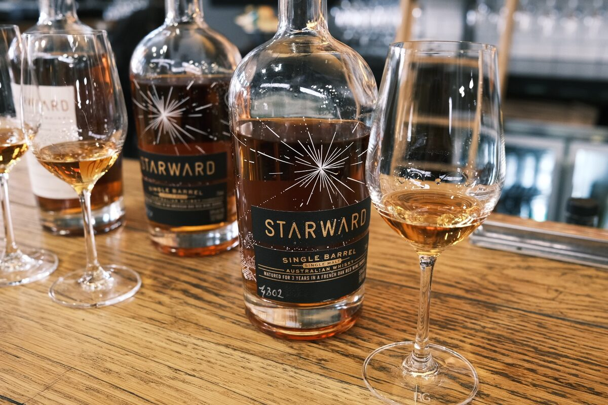

Starward "Single Barrel 4302" 3 years 55% (Barossa barrique)
French oak barrique this time. More porous, I think?
Colour Amber.
Nose Coconut. Fruit roll ups. Jelly snakes. Marzipan. Peanuts? Roasted hazelnuts. With water, cream, nuttier.
Palate Tart fruit – berries – on the attack. Orange and lemon acidity. Oak tannins, cloves, nutmeg, baking spices. Fruit jams. Lamingtons. With water, toffee apples.
Finish Long and spicy. Oak. Very warming. Fruit jellies. With water, more tannic…
Comments Alright, I’m done with tannins for now. 84/100.

Posted by Dominic on 14 Jun 2021